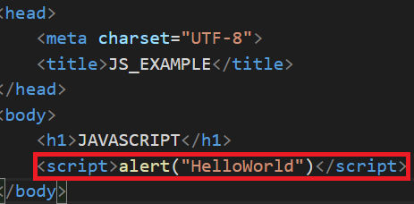
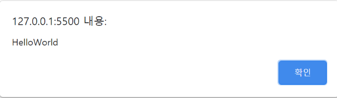
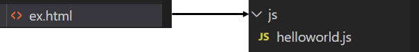

#0 js 파일 html 파일 연결하기
[목차]
1. HTML 파일 내부에 JS 코드 작성하기
2. HTML 파일과 JS 파일 연결하기
* 개인적인 공부 기록용으로 작성한 글이기에, 잘못된 내용이 있을 수 있습니다.
#1. HTML 파일 내부에 JS 코드 작성하기
웹문서 안에 자바스크립트를 작성할 경우에는, <script></script> 태그 사이에 작성합니다. 그리고, 자바스크립트는 이미지나 텍스트와 같은 요소를 제어하는 경우가 많기에, </body>태그 직전에 삽입하는 것이 좋습니다.
또한 HTML/CSS와 달리 JS는 대소문자를 구별하기에 코드를 작성할 때 유의해야 합니다.

다음은 「HelloWorld」라는 메시지 박스를 출력하는 예제입니다. alert()함수의 큰따옴표("")안에 출력하고자 하는 내용을 입력하면 됩니다. (메시지 박스 출력 예제는 다음 포스팅에서 자세하게 다룰 예정입니다.)
<!DOCTYPE html>
<html lang="ko">
<head>
<meta charset="UTF-8">
<title>JS_EXAMPLE</title>
</head>
<body>
<h1>JAVASCRIPT</h1>
<script>alert("HelloWorld")</script>
</body>
</html>

#2. HTML파일과 JS파일 연결하기
다음으로, 웹문서와 외부의 스크립트 파일을 연결하는 방법에 대해서 알아보도록 하겠습니다.
웹 문서 밖의 자바 스크립트 파일을 연결하기 위해서는, <script>태그의 src 속성을 이용합니다.
기본형은 다음과 같습니다.
[기본형] <script src = "JS 파일 경로"></script>다음은, ex.html 웹문서에 js 폴더 내부에 존재하는 helloworld.js 파일을 연결한 예제입니다.
여기서 js 파일에는 <script></script> 태그를 작성할 필요가 없습니다.

[ex.html]
<!DOCTYPE html>
<html lang="ko">
<head>
<meta charset="UTF-8">
<title>Example</title>
</head>
<body>
<script src = "/js/helloworld.js"></script>
</body>
</html>
[helloworld.js]
alert("HelloWorld!");